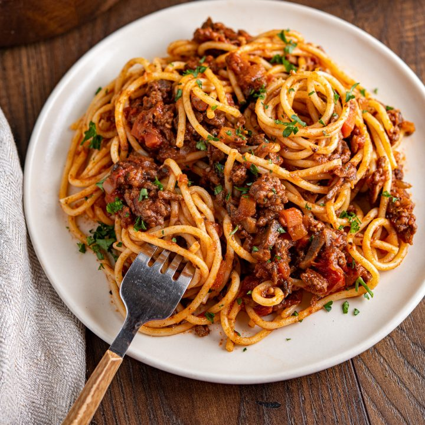

"A Taste of Italia"
In 2017 Maria Gionauty finally realized her dream of opening a restraunt. She believed that there was nothing more comforting than a big plate of pasta. Located in downtown Big Rapids, Noodle Nest now serves hundreds of patrons daily with authentic Italian cuisine and a cozy stylistic atmosphere.

Lasagna, Cal. 1100, $13.33. Ingredients: Lasagna noodles, ricotta cheese, fresh mozzarella and parmesean, and authentic Italian meat sauce using local beef and fresh imported Italian tomatoes. The sauce can also come in vegan options such as red sauce. This dish includes house made italian seasoning. This dish is baked to perfection and serves with garlic bread or bread sticks.
Spaghetti Bolognese, Cal. 1100, $10.99. Ingredients: Spagahetti noodles, minced onions carrots celery and garlic, local raised beef minced, plum tomatoes imported directly from Italy, dried basil leaves, bay leaves, puréed tomato, a deseeded red chilli chopped finely, simmered in red wine. This dish is a favorite among our Italian born cooks and others alike due to the rich nastalgic flavor.

Cacio-e-pepe, Cal. 1100, $13.33. Ingredients: Lasagna noodles, ricotta cheese, fresh mozzarella and parmesean, and authentic Italian meat sauce using local beef and fresh imported Italian tomatoes. The sauce can also come in vegan options such as red sauce. This dish includes house made italian seasoning. This dish is baked to perfection and serves with garlic bread or bread sticks.

Fettuccine-alfredo, Cal. 1100, $12.99. Ingredients: Spagahetti noodles, minced onions carrots celery and garlic, local raised beef minced, plum tomatoes imported directly from Italy, dried basil leaves, bay leaves, puréed tomato, a deseeded red chilli chopped finely, simmered in red wine. This dish is a favorite among our Italian born cooks and others alike due to the rich nastalgic flavor.